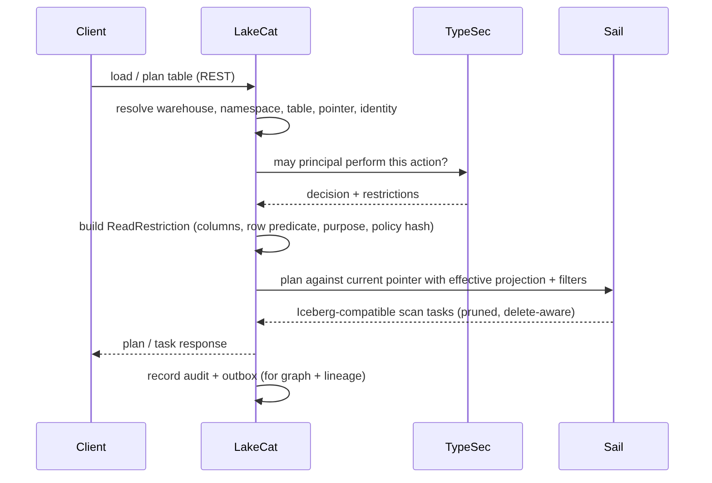
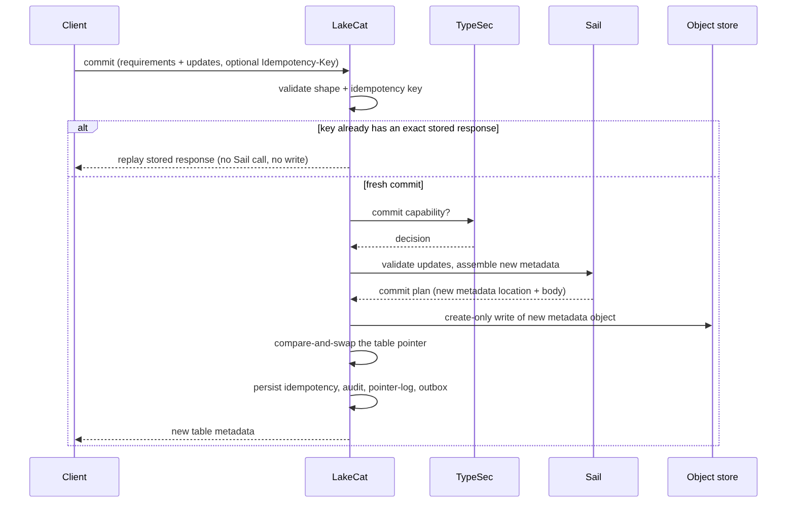

Thin does not mean trivial. LakeCat owns the durable catalog state that must be correct even when external sinks are down, and nothing more. Its responsibilities are exactly:
Everything else is deliberately excluded — LakeCat does not invent a table format, fork manifest pruning, own graph traversal, decide security semantics, or author QueryGraph’s business model. Those belong to Sail, Grust, TypeSec, and QueryGraph respectively (Chapter 4).
All durable state sits behind one trait, so the memory store (for tests and embedded use) and the Turso store (for durable local deployments) are interchangeable. The interesting methods are the table lifecycle and the idempotent replay hook:
#[async_trait]
pub trait CatalogStore: Send + Sync + 'static {
async fn create_namespace(&self, warehouse: &WarehouseName, namespace: Namespace)
-> LakeCatResult<()>;
async fn list_tables(&self, warehouse: &WarehouseName) -> LakeCatResult<Vec<TableRecord>>;
async fn create_table(&self, table: TableRecord) -> LakeCatResult<TableRecord>;
async fn load_table(&self, ident: &TableIdent) -> LakeCatResult<TableRecord>;
// Optimistic pointer advancement: the catalog transaction.
async fn commit_table(&self, ident: &TableIdent, commit: TableCommit)
-> LakeCatResult<TableRecord>;
// Exact idempotent replay: same key + same request hash -> stored response.
async fn replay_table_commit(
&self,
ident: &TableIdent,
idempotency_key: &str,
idempotency_request_hash: &str,
) -> LakeCatResult<Option<TableRecord>>;
// Compact pointer-log history for operators and QueryGraph.
async fn table_commit_records(&self, ident: &TableIdent, start: u64, end: Option<u64>)
-> LakeCatResult<Vec<TableCommitRecord>>;
}A read begins like a standard catalog request and ends with a governed Sail plan. The policy restriction becomes part of planning, not a note beside it.

The governing rule is narrow, never widen. An empty
client projection under a column restriction means the allowed
columns; a client projection may narrow further but cannot widen.
LakeCat records both the requested and the effective projection (and
stats fields) as replay evidence, and recomputes the restriction on
every stateless fetchScanTasks so a stale token cannot
expand back to all columns. Outbox admission enforces that the governed
scan replay carries the same read-restriction at the top
level and inside authorization-receipt.context, a nonblank
purpose, and a positive
max-credential-ttl-seconds, and rejects unknown fields — so
graph, lineage, and QGLake evidence can never inherit a claim the
receipt did not capture.
The write path follows the same principle: LakeCat owns the transaction, Sail owns Iceberg validation and metadata assembly.

Three invariant groups make this safe, each enforced once:
Idempotency-Key / x-lakecat-idempotency-key,
matching if both present). The same key + same body replays the stored
response before any Sail call or write; the same key + a different body
conflicts. Only audit-safe hashes are stored — never raw keys or
secrets. Ordinary clients may commit without a key; they simply get no
replay proof.sha256: hashes of the metadata location and failure detail,
never raw object paths, storage roots, profile ids, or backend text. A
conflict still looks like an ordinary Iceberg conflict to the
client.Commit records carry compact evidence — Iceberg format version, current snapshot id, request/response/idempotency/policy hashes, principal — so operators and QueryGraph can answer audit questions from the pointer log without parsing full metadata. Operators read it through a governed endpoint:
curl -s -H 'x-lakecat-principal: operator@example.com' \
http://127.0.0.1:8181/management/v1/warehouses/local/namespaces/default/tables/events/commitsThat read itself enters the outbox as
table.commits-listed and drains as lineage plus
Commit graph anchors keyed by table and sequence — an
auditable trail without giving anyone direct database access or turning
LakeCat into a graph query engine.
The durable local store uses the Rust turso crate behind
the turso-local feature. Object storage remains the source
of Iceberg metadata files; Turso holds the atomic pointer and the
control-plane memory: projects and warehouses, storage profiles,
namespaces and tables, the metadata pointer log, idempotency records,
soft deletes, policy bindings, audit events, and outbox events. This
mirrors the Iceberg contract — metadata files describe the table;
catalog state decides which file is current.
Two disciplines keep the spine trustworthy:
read-restriction must
match, purpose and TTL must be present — before any sink sees the event.
Malformed source evidence stays available for retry instead of being
promoted into a QGLake handoff.